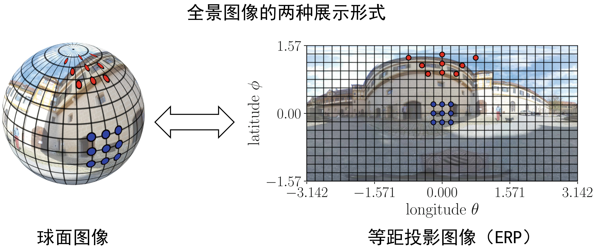

研究方向
全景视觉数据是通过全景数据采集设备采集得到的全景图像或全景视频，它包含了空间中全方位360度的视觉信息，具有“视野全，可交互，沉浸感强”的特点。在采集阶段，全景视觉数据覆盖了采集点四周360度的视野，能够避免遗漏突发事件；在播放显示阶段，全景视觉数据可以实现交互性浏览，给人们带来身临其境的沉浸感，是实现虚拟现实（Virtual Reality, VR）最基本的媒体形式。因此全景视觉数据在旅游展示、公共安全、自动导航、个人娱乐等多个领域都有着巨大的优势和发展潜力。
